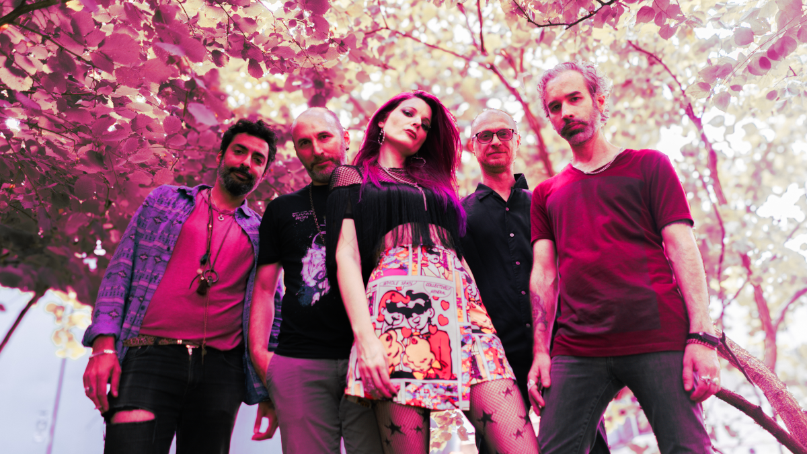

Get ready for an adrenaline-fueled ride through the most iconic 90s rock hits—amped up with our bold, edgy twist.
With a fearless, badass frontwoman leading the charge, we take every stage by storm. Think pulsating beats, distorted guitars, and electrifying vibes that leave the crowd sweating, screaming, and begging for more.
We specialize in high-energy, mind-blowing performances that transform your favorite 90s anthems into unforgettable rock spectacles.
Whether you’re throwing a wild party, hosting a corporate bash, or planning a wedding with an edge, we’ll take your night from fun to absolutely explosive.
For an event that demands intensity, excitement, and pure rock magic, look no further. We’ll make sure the only thing left standing is the memory of an unforgettable night.
Book us today and let’s rock your world!

known for her work in pop, pop-rock, alternative rock and electronic rock genres. Emerging in the EBM, synth-pop, and new wave scenes, she collaborated with German bands contributing to Tel Aviv's alternative culture. After her participation in the VIP season of the TV series Ma SheKore BeEilat Vip, Zoltak gained significant publicity.
Zoltak, a hearing-impaired woman, openly discusses her hearing loss, aiming to break the stigma around it and promote the use of hearing aids.
In 2011, she opened for the German new wave band And One at Barby Club in Tel Aviv. In 2013, she opened for the German synth-pop and EBM band VNV Nation at the same venue. In 2015, she performed with Felix Marc and the German synth-pop band Diorama at the Barby Club in Tel Aviv.
Zoltak has collaborated with prominent artists such as Si haiman, Amir Dadon, Eifo HaYeled, Tipex and Hayehudim .
Zoltak is an advocate for the rights and awareness of hearing-impaired and deaf individuals. Since 2020, she has been serving as an ambassador for the organization Circle of Hearing. Within this role, she has participated in various campaigns to inspire children and adolescents with hearing impairments, using herself as a model as a woman with hearing loss who also uses hearing aids.
In the same year, she initiated the project Zoltak Kashevet, a voice development lesson for students in grades 6 to 9, teaching them how to sing properly, perform, and present.
His diverse and unique style allows him to blend in with any type of music.
Nowadays, Yatziv is based in Berlin, Germany, where he Takes part in different bands and projects as well as an educator and a teacher for both drumming and Tabla playing.
Performing Artist:
Yatziv took part in various bands and different projects worldwide, and was showing amazing talent in both playing and performing, while paying attention to his musicality and sensitivity towards his own sound, both in a group as well as a solo artist.
Here are some of the projects he participated in:
Sanhedrin, Ahvak, Orphaned Land, Solstice Coil, Shlomit Levi (Orphaned Land),
Sanjay Sharma, Reflections, Yuval Ron & the residents of the future, Larry Porter,
Cymin Samawatie, Hot Fur, Soundwitch Project, Marc Miethe & the Didjesbrew,
Satya & Pari, Asad Khan, Roberto Badoglio, Pulsar trio, Namgar, Analog Birds,
Ruslan Sirota, Eran Hollander (Reflections), Matyas Wolter (Pulsar Trio), Xell,
Tom “Fountainhead” Geldschläger, Brigandu, Django Lassi, the Falk Bonitz Trio
and many more.
In addition, Yatziv took part in several theater projects and worked with some of the leading theater institutes. such as:
Clipa Theater, Beit-Zvi- School of acting, The tribute for David Bowie's “Ziggy Stardust”
and more.
Yuri is an active musician , composer, Producer and sound engineer living in Berlin since 2022.His works have been used in films, TV shows, documentaries, TV and web commercials, he had recorded several studio albums with different bands and have been on air on Russian, Israeli and European radio stations.
Amit is a bass player, producer/songwriter and audio engineer based in Berlin, currently working with a diverse selection of bands and artists in Berlin’s indie scene. While also working as a session bass player and mixing engineer, he is set to release the first album of his self produced project - Hollowfame.